1. Überblick
Der Quicksafe Unterweisungs-Generator erstellt strukturierte Unterweisungsnachweise für neue Mitarbeiter. Das Tool arbeitet mit lokalen Daten, speichert Einstellungen in der config.json und erzeugt HTML- sowie PDF-Dokumente.
Name, Personalnummer und Drucksprache wählen. Danach HTML-Vorschau oder PDF erzeugen.
Firma, Adresse, Farbe und Logo eintragen.
Ansprechpartner, Arbeitszeiten, PSA, Regeln, Phasen und Zusatzseiten pflegen.
Sprachen aktivieren, automatische Übersetzung starten und manuell korrigieren.
Schnellhilfe, Ordner, Backup, Credits und Hinweise zur Nutzung.
Wichtig: Das Programm unterstützt die Dokumentation. Die eigentliche Unterweisung muss weiterhin persönlich, verständlich und fachlich korrekt durchgeführt werden. Automatische Übersetzungen sollten bei sicherheitsrelevanten Inhalten geprüft werden.
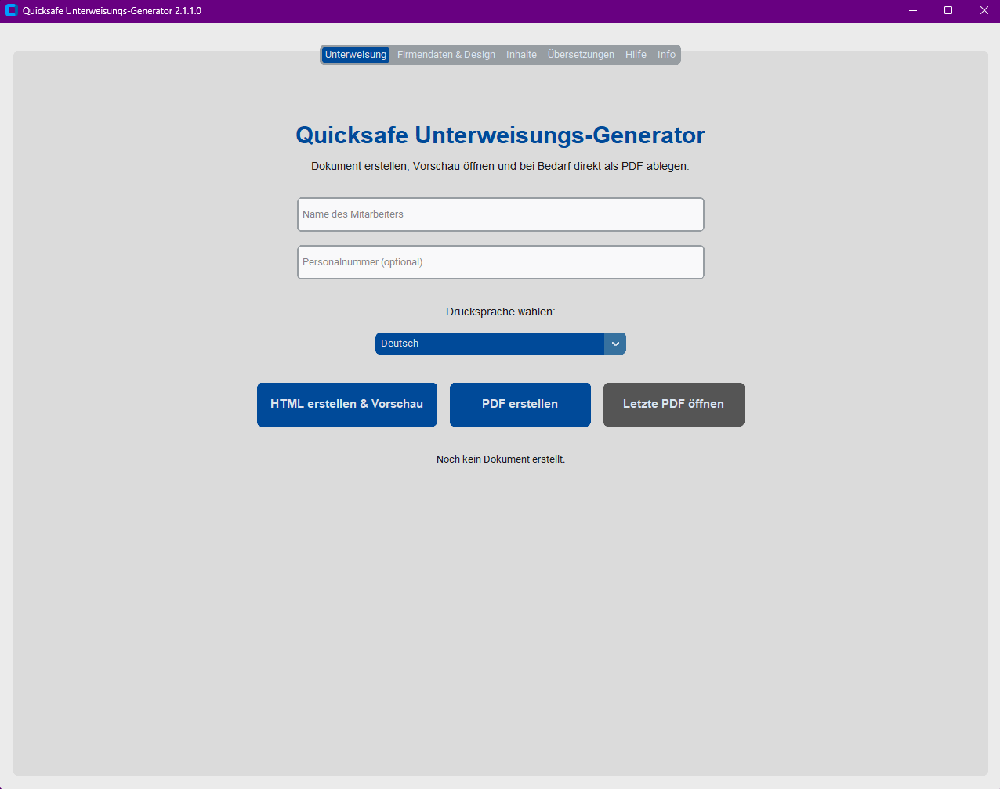
2. Inhaltsverzeichnis
3. Start und erster Ablauf
- ZIP vollständig entpacken.
Quicksafe_UnterweisungsGenerator.exestarten.- Im Tab Firmendaten & Design Firmenangaben prüfen.
- Im Tab Inhalte Ansprechpartner, Regeln, Arbeitszeiten und Zusatzseiten pflegen.
- Im Tab Übersetzungen Sprachen aktivieren und Übersetzungen prüfen.
- Im Tab Unterweisung Name, Personalnummer und Sprache wählen.
- HTML-Vorschau oder PDF erstellen.
Tipp: Vor größeren Änderungen im Info-Tab ein Config-Backup erstellen.
4. Firmendaten & Design
Hier werden Firmendaten, Dokumentfarbe und Logo gepflegt. Diese Angaben erscheinen später im Dokumentkopf der HTML- und PDF-Ausgabe.
- Firmenlogo statt Text oben verwenden: nutzt ein Logo, falls vorhanden.
- Dokumentfarbe: steuert die Hauptfarbe der Ausgabedokumente.
- Logo auswählen / entfernen: verwaltet das Logo im Tool.
- Firmendaten: Firma, Adresse, Telefon, Fax, E-Mail und Website.

5. Inhalte Seite 1 – Ansprechpartner und Organisation
Seite 1 ist für organisatorische Informationen gedacht. Hier werden Geschäftsleitung, Betriebsleiter, Vorarbeiter/Bereiche, Spezialfunktionen, Verwaltung, Ansprechpartner, Notfallrollen und Ersthelfer gepflegt.
- Mehrere Namen können eingetragen und sortiert werden.
- Zusätzliche Ansprechpartner sind optional.
- Notfallrollen wie Brandschutzhelfer, Evakuierungshelfer, Sammelpunkt und Alarmfall können ergänzt werden.
- Das freie Infofeld kann für kurze betriebliche Zusatzinformationen genutzt werden.
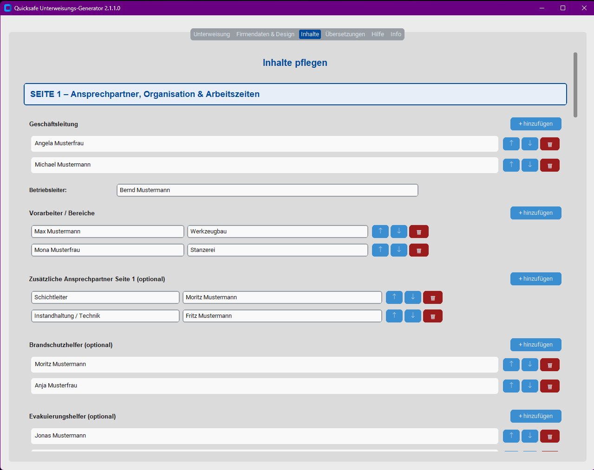
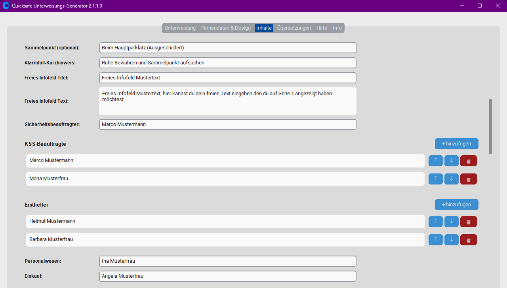
6. Arbeitszeiten
Die Arbeitszeiten können flexibel gepflegt werden. Je nach Bedarf können Standardzeiten, Schichtarbeit oder freie Zeitblöcke verwendet werden.
- Standard: klassische Tagesarbeitszeiten mit Pausen.
- Schichtarbeit: geeignet für Früh-/Spät-/Nachtschicht oder ähnliche Modelle.
- Freie Zeitblöcke: maximale Flexibilität für individuelle Arbeitszeitmodelle.
Der Samstag ist optional. Wenn keine Zeiten eingetragen sind, muss er nicht im Dokument erscheinen.
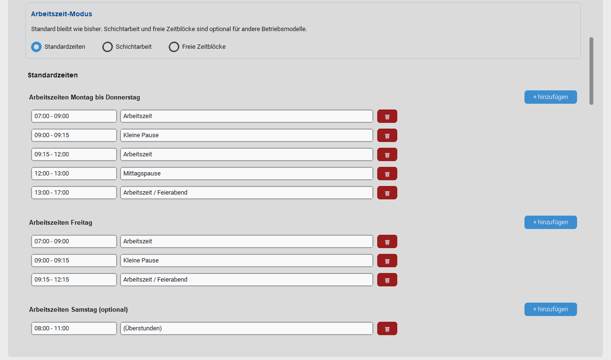
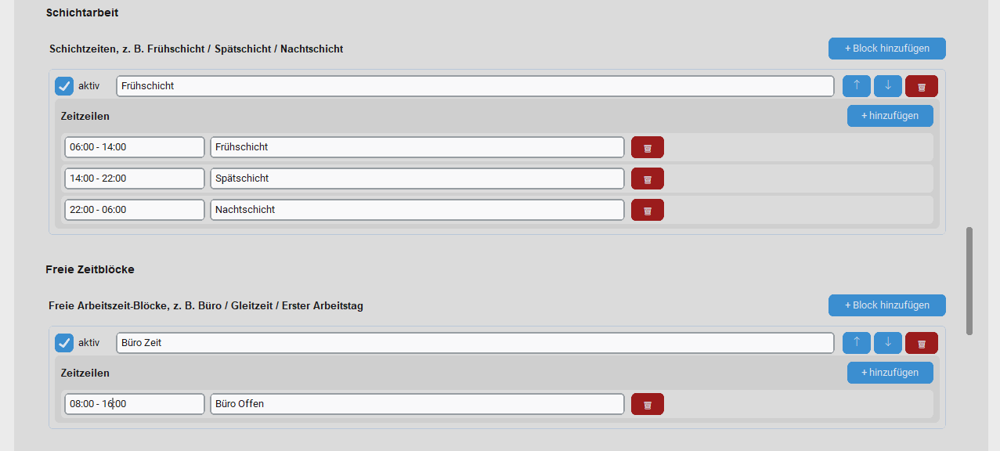
7. Seite 2 – PSA und wichtige Regeln
Seite 2 enthält die erforderliche Schutzausrüstung und die wichtigen Sicherheitsregeln. Diese Regeln sind bewusst kurz gehalten, damit sie schnell verstanden werden.
- PSA kann aktiviert/deaktiviert werden.
- Regeln können ergänzt, geändert, sortiert oder gelöscht werden.
- Die Regeln werden in der jeweiligen Drucksprache zweisprachig ausgegeben, wenn eine Fremdsprache gewählt wird.
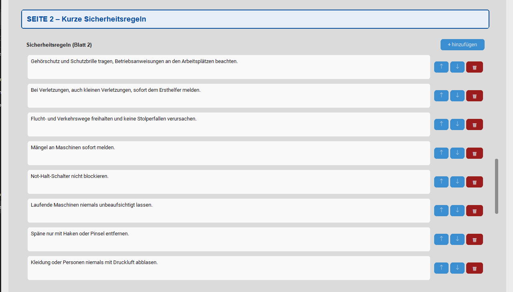
8. Seite 3 – Unterweisungsphasen und Unterschriften
Seite 3 dokumentiert die einzelnen Unterweisungsabschnitte und enthält Unterschriftsbereiche.
- Teil 1: Vorort-Einweisung
- Teil 2: Vorgesetzter / Pate
- Teil 3: Personalwesen / Büro
Wenn Zusatzseiten aktiv sind, wird automatisch ein kompakter Checkpunkt ergänzt, damit bestätigt werden kann, dass diese Seiten ausgehändigt wurden.
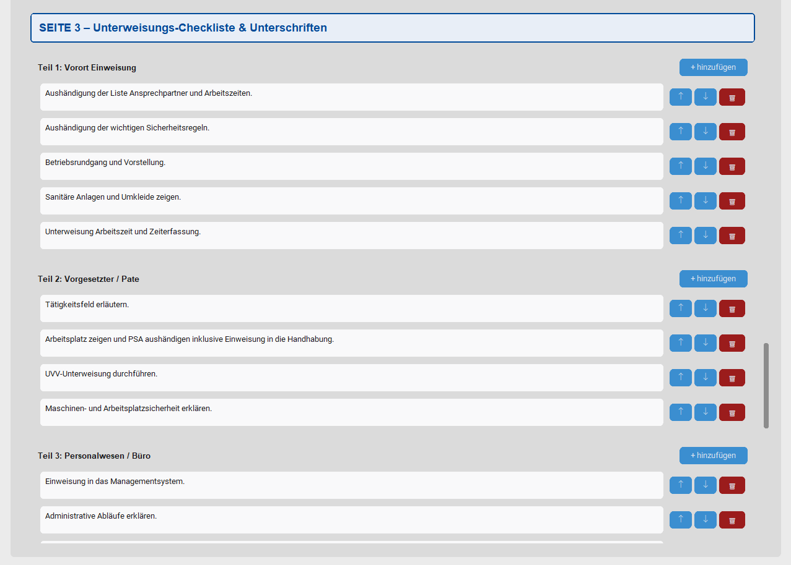
9. Zusatzseiten
Zusatzseiten sind für längere betriebliche Hinweise gedacht, die nicht in das normale 3-Seiten-System passen. Jede Zusatzseite bleibt eine eigene DIN-A4-Seite.
- Zusatzseiten können aktiviert/deaktiviert werden.
- Pro Seite können mehrere kurze Blöcke oder ein langer Block verwendet werden.
- Weitere Seiten können über + Seite hinzufügen erstellt werden.
- Die Zusatzseiten werden automatisch in der Seitenzählung und auf Seite 3 berücksichtigt.
Praxisidee: Für viele kurze Regeln mehrere Blöcke auf einer Zusatzseite verwenden. Für lange Richtlinien lieber eine eigene Seite mit nur einem großen Block nutzen.
Bedienung der Zusatzseiten
| Bedienelement | Bedeutung |
|---|---|
| Haken links bei einer Seite | Aktiviert oder deaktiviert die gesamte Zusatzseite. Deaktivierte Seiten werden nicht ausgegeben. |
| Haken links bei einem Block | Aktiviert oder deaktiviert nur diesen einzelnen Textblock. Praktisch, wenn ein Text ausnahmsweise nicht gedruckt werden soll, aber nicht gelöscht werden soll. |
| Kleines Textfeld | Dient zur Übersicht und für schnelle Korrekturen. Bei langen Texten ist das Feld bewusst kompakt. |
| Button „Groß“ | Öffnet den Text in einem großen Bearbeitungsfenster. Damit muss ein langer Text nicht im kleinen Feld bearbeitet werden. |
| Pfeile ↑ / ↓ | Verschiebt Seiten oder Blöcke nach oben oder unten. |
| Papierkorb | Löscht die jeweilige Seite oder den jeweiligen Block. |
| + Seite hinzufügen | Erstellt eine weitere Zusatzseite, z. B. Seite 5 oder Seite 6. |
| + Block | Fügt auf der jeweiligen Zusatzseite einen weiteren Textblock hinzu. |
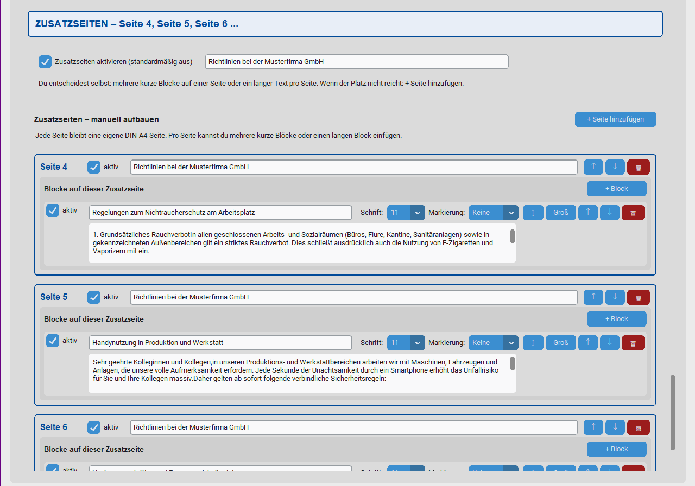
10. Übersetzungen
Deutsch ist die Originalsprache. Aktive Fremdsprachen erscheinen in der Drucksprachen-Auswahl, im Status und in den Übersetzungseditoren.
- Sprachauswahl speichern: übernimmt die aktivierten Sprachen.
- Status aktualisieren: prüft den Übersetzungsstand.
- Fehlende ergänzen: erzeugt nur leere Übersetzungen.
- Alle neu übersetzen: erzeugt Übersetzungen neu und kann vorhandene Texte überschreiben.
- Großer Editor für Zusatzseiten-Texte: komfortable Bearbeitung langer Zusatzseiten.
Hinweis: Automatische Übersetzungen reichen oft aus, sollten bei Fachbegriffen, rechtlichen Hinweisen oder sicherheitsrelevanten Texten aber geprüft werden.
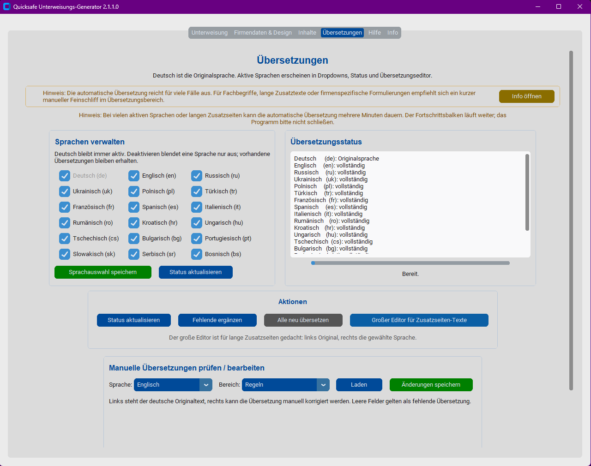
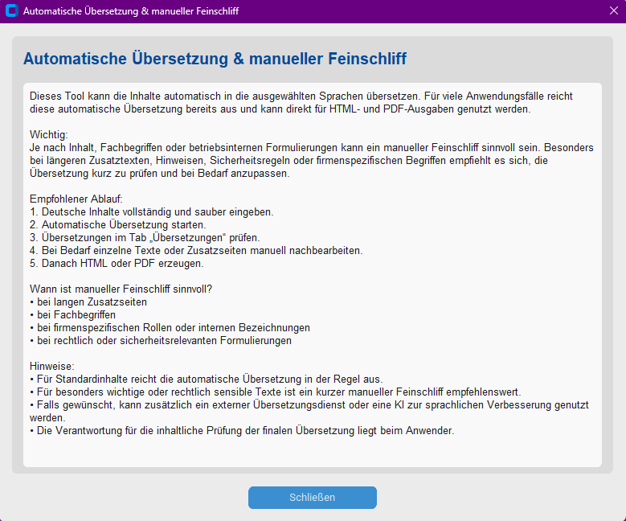
Großer Zusatzseiten-Übersetzungseditor
Der große Editor ist für lange Zusatzseiten gedacht. Links steht der deutsche Originaltext, rechts die gewählte Fremdsprache. So können lange Texte besser geprüft, korrigiert oder neu übersetzt werden.
- Sprache wählen.
- Zusatzblock wählen.
- Fehlende Übersetzung erzeugen oder Block neu übersetzen.
- Bei Bedarf manuell korrigieren.
- Speichern.
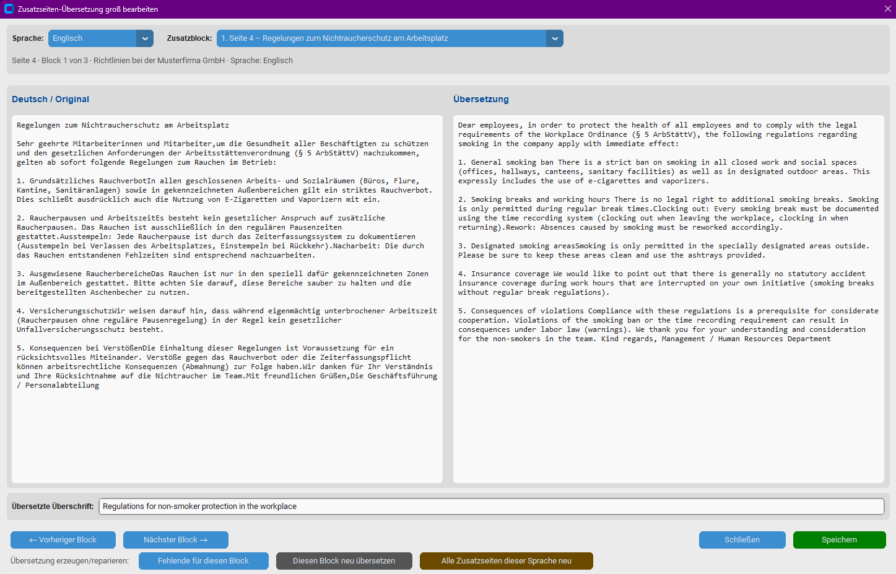
11. HTML-Vorschau und PDF-Ausgabe
Im Tab Unterweisung werden Name, Personalnummer und Drucksprache gewählt. Danach kann eine HTML-Vorschau erstellt oder ein PDF erzeugt werden.
- HTML erstellen & Vorschau: erzeugt ein HTML-Dokument und öffnet es im Browser.
- PDF erstellen: erzeugt eine PDF-Datei im Output-Ordner.
- Letzte PDF öffnen: öffnet die zuletzt erzeugte PDF.
Die erzeugten Dateien landen im Ordner output.
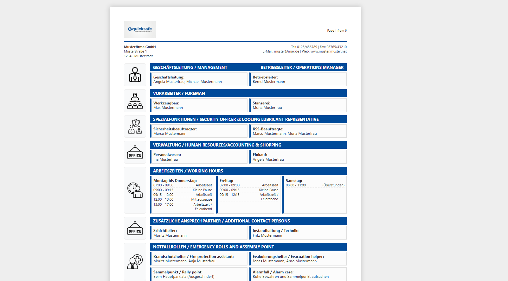
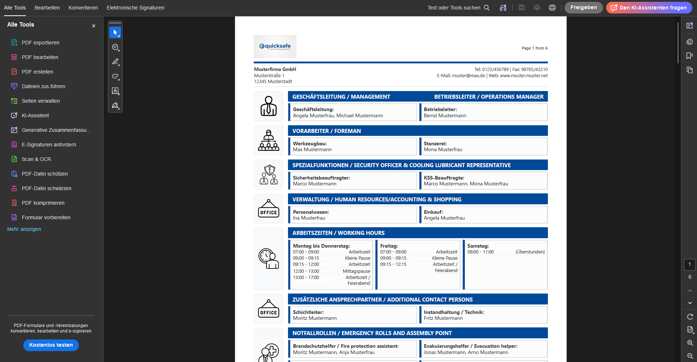
12. Backup, Wiederherstellung und Muster-config
Die wichtigsten Einstellungen, Inhalte und Übersetzungen liegen in der config.json. Diese Datei sollte regelmäßig gesichert werden.
Backup erstellen
- Tab Info öffnen.
- Config-Backup erstellen anklicken.
- Das Backup wird im Ordner
backupabgelegt.
Muster-Konfiguration verwenden
Im Release-Ordner kann ein Ordner beispiel config liegen. Dort befindet sich eine Muster-Konfiguration als Beispiel.
- Programm schließen.
- Falls bereits eigene Daten eingetragen wurden: vorhandene
config.jsonsichern. - Muster-config aus dem Ordner
beispiel configkopieren. - Die kopierte Datei in
config.jsonumbenennen. - Die vorhandene
config.jsonim Programmordner damit ersetzen. - Programm neu starten.
Achtung: Beim Ersetzen der config.json werden vorhandene eigene Einstellungen überschrieben. Daher vorher unbedingt sichern.
13. Info-Tab, Ordner und Sicherung
Im Info-Tab stehen Versionsangaben, Hinweise, Credits, Kontakt, Ordnerfunktionen und die Backup-Funktion.
- Programmordner öffnen: öffnet den Hauptordner des Tools.
- Output-Ordner öffnen: zeigt erzeugte HTML/PDF-Dateien.
- Backup-Ordner öffnen: zeigt gespeicherte Config-Backups.
- Anleitung öffnen: öffnet diese HTML-Anleitung.
- Config-Backup erstellen: sichert die aktuelle Konfiguration.
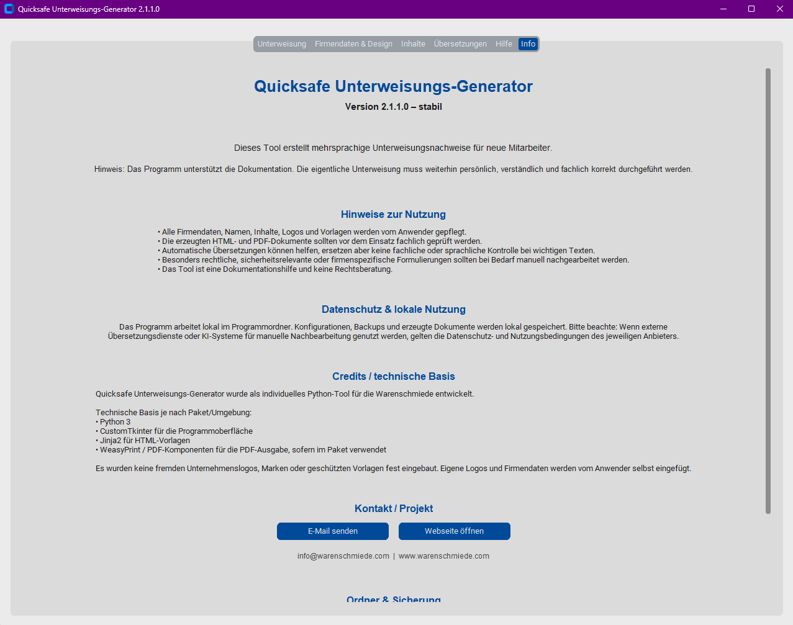
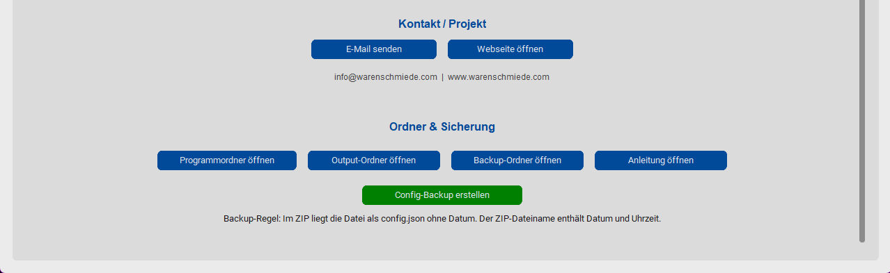
14. Haftungsausschluss & wichtige Hinweise
Der Quicksafe Unterweisungs-Generator ist eine Arbeitshilfe zur Erstellung und Dokumentation von Unterweisungsnachweisen. Das Tool ersetzt keine rechtliche, sicherheitstechnische oder fachliche Prüfung durch das Unternehmen.
Wichtig für die Anwendung
- Die Inhalte, Firmendaten, Logos, Regeln, Zusatztexte und Übersetzungen werden vom Anwender bzw. vom Unternehmen gepflegt.
- Vor dem Einsatz sollten HTML- und PDF-Ausgaben immer geprüft werden.
- Automatische Übersetzungen können hilfreich sein, sollten bei sicherheitsrelevanten oder rechtlich wichtigen Texten aber fachlich und sprachlich kontrolliert werden.
- Die eigentliche Unterweisung muss weiterhin persönlich, verständlich und fachlich korrekt durchgeführt werden.
- Das Tool ist keine Rechtsberatung und keine sicherheitstechnische Freigabe.
- Für die Richtigkeit, Vollständigkeit und Aktualität der verwendeten Inhalte ist der Anwender bzw. das einsetzende Unternehmen verantwortlich.
Datenschutz und lokale Dateien
Das Programm speichert Konfigurationen, Backups und erzeugte Dokumente lokal im Programmordner. Wenn Dateien weitergegeben oder externe Übersetzungsdienste genutzt werden, gelten die Datenschutz- und Nutzungsbedingungen des jeweiligen Dienstes bzw. Unternehmens.
Empfehlung: Vor dem produktiven Einsatz eine eigene Muster-Unterweisung erstellen, intern prüfen lassen und diese geprüfte Konfiguration anschließend als Vorlage sichern.
15. Kurze Fehlerhilfe
| Problem | Mögliche Lösung |
|---|---|
| Logo fehlt | Im Tab Firmendaten & Design prüfen, ob ein Logo ausgewählt wurde und ob der assets-Ordner vorhanden ist. |
| Übersetzung fehlt | Sprache aktivieren, Status aktualisieren und Fehlende ergänzen anklicken. |
| Falsche oder holprige Übersetzung | Manuell im Übersetzungseditor oder im großen Zusatzseiten-Editor korrigieren. |
| PDF wird nicht erstellt | Prüfen, ob die PDF-Komponenten im Paket vorhanden sind und das Programm aus dem entpackten Ordner gestartet wurde. |
| Eigene Daten versehentlich überschrieben | Backup aus dem Ordner backup wiederherstellen. |